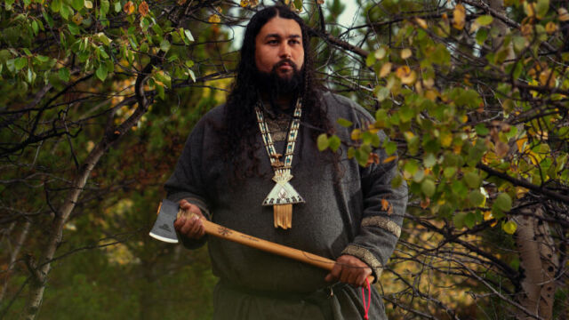
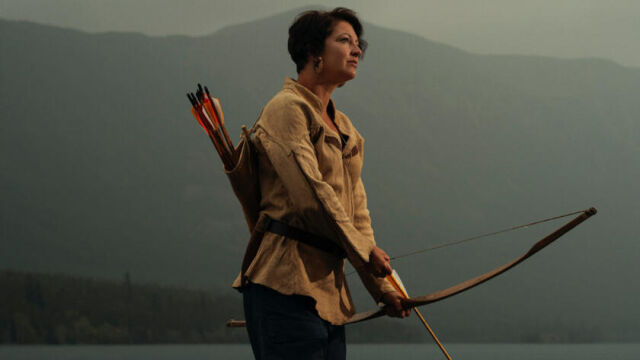
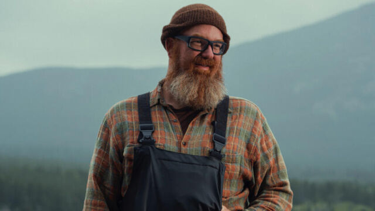
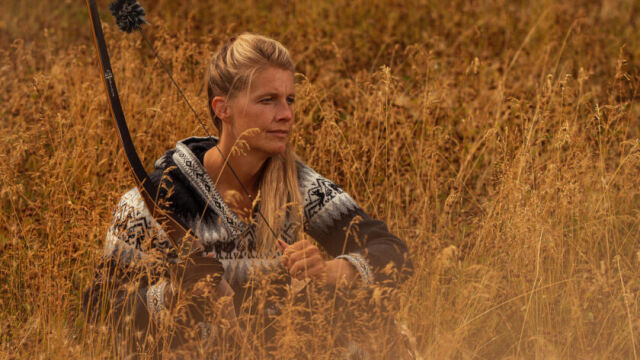
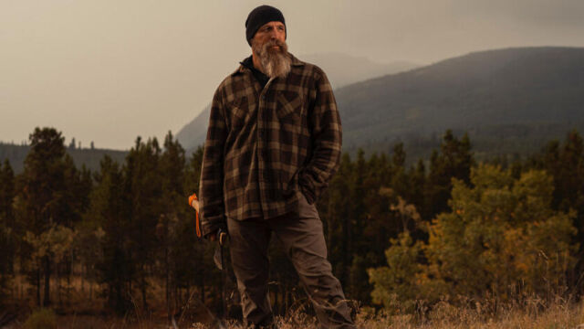
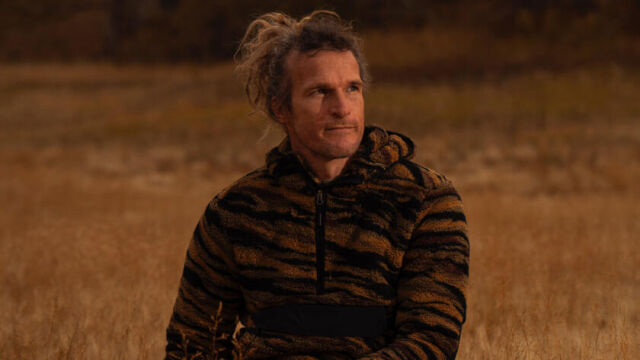
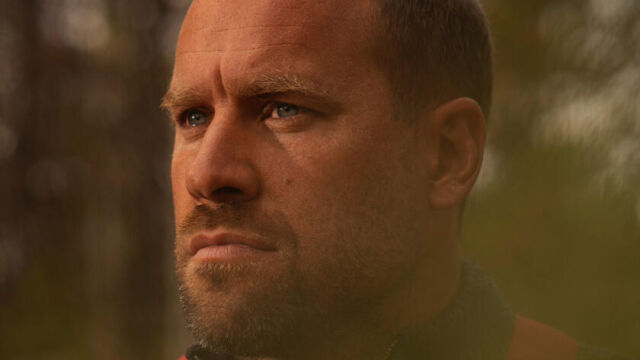
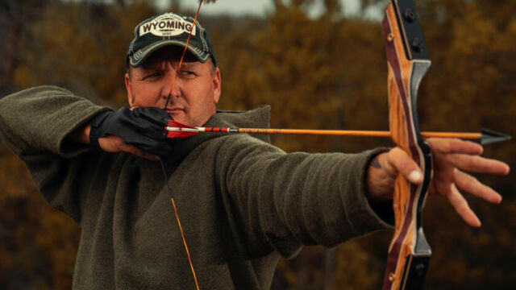

1stWinner
1stWinnerClay Hayes
Professional Bowyer & Hunter
- Lasted
- 74 days
- Age
- 40
- From
- Kendrick, Idaho
Loadout
- Sleeping bag
- Pot
- Axe
- Saw
- Multitool
- Bow and arrows
- Paracord
- Fishing line and hooks
- Snare wire
- Ferro rod
Alone
Grizzly Mountain · Chilko Lake, British Columbia, Canada · Dropped off 18 Sep 2020 · Premiered 3 Jun 2021
Days each survivalist lasted, in finishing order, and why they tapped out. Every season page uses the same 0–100 day scale so seasons can be compared at a glance.









Who they are, where they're from and the ten items they carried in.
1stWinnerProfessional Bowyer & Hunter
Loadout
Construction Laborer/Lead Singer
Loadout
Prehistoric Leather Specialist
Loadout
Homesteader & Educator
Loadout
Retail Sporting Goods Owner
Loadout
Retired Military/Homesteader
Loadout
Wilderness Survival Instructor
Loadout
8thplaceEducational Consultant
Loadout
Carpenter
Loadout
Oil Rig Roughneck
Loadout
How many survivalists chose each item (items grouped into simplified categories).
Air dates, survivalists remaining at the start of each episode, viewers and IMDb rating.
| Ep | Title & opening quote | Aired | Remaining | Viewers (M) | IMDb |
|---|---|---|---|---|---|
| 1 | The Hunted“The worst cruelty that can be inflicted on a human being is isolation.” — Sukarno | 3 Jun 2021 | — | 1.34 | |
| 2 | Open Season“True wilderness can still be found, but it's hard to reach and dangerous when you get there.” — Michelle Paver | 10 Jun 2021 | — | 1.56 | |
| 3 | Chewed Up“It is not because things are difficult that we do not dare; it is because we do not dare that they are difficult.” — Seneca | 17 Jun 2021 | — | 1.40 | |
| 4 | Far From Home“Men are not prisoners of fate, but only prisoners of their own minds.” — Franklin D. Roosevelt | 24 Jun 2021 | — | 1.42 | |
| 5 | The Buck“Only by going alone in silence, without baggage, can one truly get into the heart of the wilderness.” — John Muir | 1 Jul 2021 | — | 1.41 | |
| 6 | Smoked“Success is the sum of small efforts, repeated day in and day out.” — Robert Collier | 8 Jul 2021 | — | 1.36 | |
| 7 | Surrounded“In nature there are neither rewards nor punishments; there are consequences.” — Robert Green Ingersoll | 15 Jul 2021 | — | 1.71 | |
| 8 | The Grizzly“I think nature's imagination is so much greater than man's, she's never going to let us relax.” — Richard Feyman [sic] | 22 Jul 2021 | — | 1.51 | |
| 9 | The Troll“We have nowhere else to go… This is all we have.” — Margaret Mead | 5 Aug 2021 | — | — | |
| 10 | All In“Adversity has the effect of eliciting talents which in prosperous circumstances would have lain dormant.” — Horace | 12 Aug 2021 | — | — | |
| 11 | The Reckoning“The rewards for those who persevere far exceed the pain that must precede the victory.” — Ted Engstrom | 19 Aug 2021 | — | — |